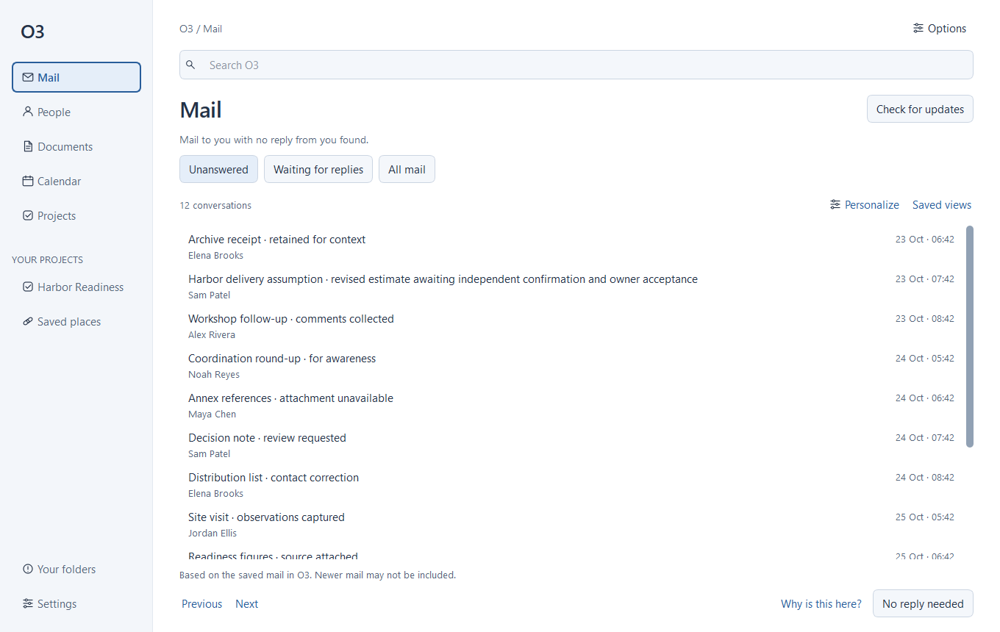
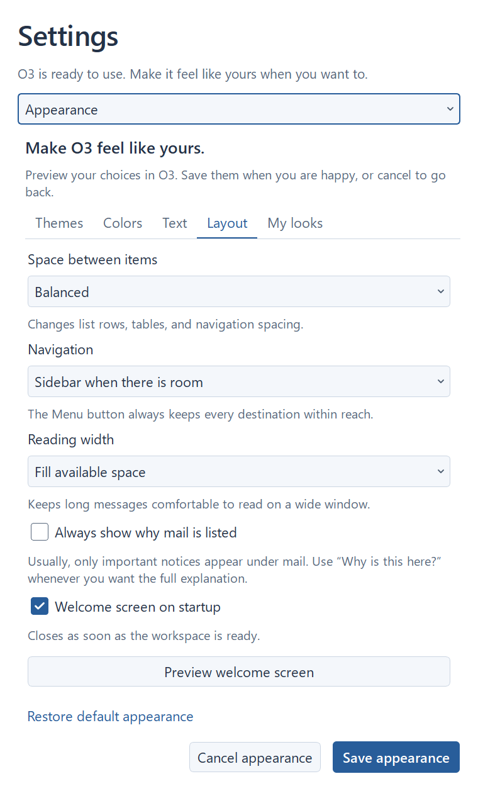

O3 · UPGRADE REVIEW 3Less repetition.
Clarity when you need it.
Routine explanations no longer sit under every mail item. The list gives the subject, sender, and date more room. Important notices still appear when a check is incomplete, a date is missing, or a choice affects multiple messages.
Get the updated ZIPVerification record

Quieter by default. Select a conversation and choose “Why is this here?” for the full explanation.The full reason also remains in the hover tooltip, the accessible description, and the reader’s Follow-up menu. Prefer the detailed list? Turn on Always show why mail is listed in Settings → Appearance → Layout. It follows the same Preview, Save, and Cancel behavior as the other appearance choices.
